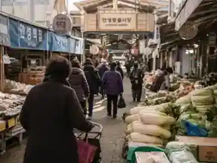
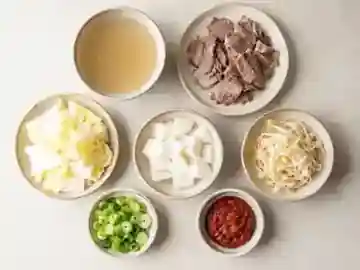
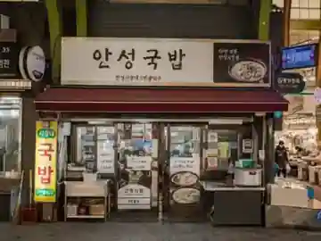
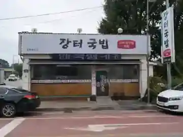
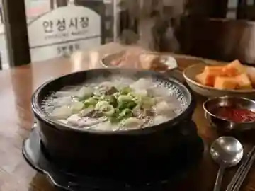
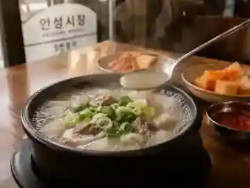
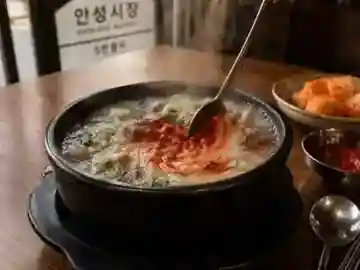

ORIGIN
장이 서기 전날 밤부터,
솥은 끓고 있었다
국밥은 전국에 있다. 전주에는 콩나물국밥, 대구에는 따로국밥, 부산에는 돼지국밥이 있다. 그러면 안성국밥은 무엇이 다른가.
원조 논쟁부터 떠올렸다면 접어두시길. 안성국밥에는 원조가 없다. 언제 시작됐는지, 어느 집이 처음이었는지 딱 부러지게 답할 기록이 남아 있지 않다.
그런데 어쩌면 없는 편이 나은지도 모르겠다. 시작을 모르는 음식은 누구의 것도 아니어서, 결국 모두의 것이 된다.
확실한 건 하나다. 이 음식은 장터에서 태어났다.
안성장은 컸다. 조선 후기 대구, 전주와 함께 3대 장으로 꼽혔다는 이야기가 전해질 만큼 컸다. 장이 서는 날이면 사람이 몰렸고, 몰린 사람은 밥을 먹어야 했다.
여기서부터는 장터에 떠도는 이야기다. 누가 처음 한 말인지는 아무도 모른다.
“국밥집 솥은 장 서기 전날 밤부터 끓었다.”
새벽 어스름에 소달구지를 끌고 도착한 장꾼이 자리를 펴기 전에 먼저 들르는 곳이 국밥집이었다는 것이다. 그래서 솥은 밤새 꺼지지 않았고, 국물은 아침이 되어서야 제 맛이 들었다고 한다.
“안성 국밥에 채소가 많은 건 인심이 아니라 계산이었다.”
고기만으로 배를 채우게 하면 값이 안 맞았다는 이야기다. 그래서 무를 넣고 배추를 넣고 콩나물을 넣어 양을 만들었고, 그게 굳어져 지금의 모양이 되었다는 것. 인심 좋은 옛날이야기보다 이쪽이 훨씬 그럴듯하게 들린다.
그리고 가장 재미있는 이야기 하나.
“안성 국밥은 놋그릇에 나왔다.”
안성은 유기(鍮器)의 고장이었다. ‘안성맞춤’이라는 말 자체가 여기서 나왔다. 안성에 주문한 놋그릇은 치수가 어긋나는 법이 없었고, 그래서 딱 들어맞는 것을 두고 안성맞춤이라 부르게 됐다는 것이다.
그 유기 장인들이 밥을 먹던 자리에서 국밥이 놋그릇에 담겨 나왔다는 이야기. 놋그릇은 열을 오래 붙잡는다. 한겨울 장터에서 식지 않는 국물을 마지막 한 술까지 뜨겁게 먹을 수 있었던 이유가 그것이었다고 한다.

AI 시안 이미지BASICS
한 그릇의 기본
기본 구성은 정직하다.
익숙한 재료다. 그런데 여기서부터가 재미있다.
이름은 하나인데 솥은 제각각이다. 어떤 집은 사골을 넣고 어떤 집은 넣지 않는다. 고기 부위도 다르고, 채소를 던져 넣는 순서도 다르고, 불을 낮추는 타이밍도 다르다. 같은 안성국밥을 먹었다는 두 사람이 전혀 다른 국물을 이야기하는 일이 흔하다.
그래서 좋은 질문은 “누가 원조냐”가 아니다. “이 집은 오늘 이 한 그릇을 어떻게 만들었나.” 이쪽이다.

AI 시안 이미지THREE POTS
안성의 솥들
기획안은 이 자리에서 업소 세 곳의 정식 상호 · 육수의 시작점 · 한 가지 특징 · 위치를 같은 분량으로 보여주도록 설계했다.

AI 시안 이미지
AI 시안 이미지HOW TO EAT
뚝배기가 놓이는 순간부터
한 그릇을 먹는 시간은 짧다. 대신 순서를 천천히 따라가면 같은 국물 안에서도 네 번쯤 장면이 바뀐다.
도착
뚝배기가 도착한다. 아직 끓고 있다.

AI 시안 이미지가장자리에서 국물이 작게 튀어 오르고, 김이 얼굴을 향해 한 번 크게 밀려온다. 반사적으로 고개를 젖히게 된다. 그 사이 안경이 뿌옇게 흐려지고, 시야가 사라진 몇 초 동안 냄새만 남는다. 소고기와 파, 그리고 이름을 붙이기 어려운 뜨거운 것의 냄새.
첫 숟갈
첫 숟갈은 국물만 뜬다. 다대기는 아직 건드리지 않는다.

AI 시안 이미지혀에 닿는 순간 처음 오는 건 온도다. 맛보다 온도가 먼저다. 그 다음 짠맛이 도착하고, 조금 늦게 — 정말로 반 박자쯤 늦게 — 단맛이 올라온다. 무에서 나온 단맛이다. 설탕의 단맛과는 결이 완전히 다르다. 물러서지 않고 바닥에 깔린다.
목을 넘어가고 나면 뒤통수가 뜨거워진다. 이마에 땀이 맺히는 건 그 다음이다. 8월 말인데 땀을 흘리며 국물을 먹고 있다는 게 잠깐 우스워지지만, 숟가락은 이미 다시 내려가 있다.
고기를 건진다. 오래 끓인 고기는 씹는 저항이 없다. 앞니로 눌렀는데 결이 그냥 갈라진다. 이때 고기 맛보다 먼저 국물 맛이 나는 게 정상이다. 고기가 국물을 다시 뱉어내는 것이다.
건더기
무를 건진다.
가장자리가 투명하다. 씹으면 국물이 튀어나온다. 이 집 국물의 정체가 무엇인지, 사실 무 한 조각이 가장 정직하게 알려준다.
콩나물을 건진다. 여기서 처음으로 아삭한 소리가 난다. 지금까지 부드러운 것만 먹다가 만나는 이 소리가, 이상하게 반갑다.
다대기
그리고 그제야 다대기를 푼다. 절반만.
붉은 기운이 국물 위에서 잠깐 소용돌이치다가 풀어진다.

AI 시안 이미지색이 바뀌고, 냄새가 바뀌고, 방금까지 먹던 것과 다른 음식이 된다. 한 그릇으로 두 번 먹는 셈이다.
밥은 마지막에, 그것도 반만 만다.
말지 않은 밥을 국물에 적셔 먹는 맛과, 밥알이 국물을 먹고 부푼 뒤의 맛은 다르다. 처음부터 다 말아버리면 앞의 것을 영영 못 먹는다.
뚝배기 바닥이 보일 때쯤 창밖을 보면 아직 한낮이다. 땀은 식었고, 이상하게 몸이 가볍다.
SAVE THIS
- 기본 구성육수 · 소고기 · 배추 · 무 · 콩나물 · 파 · 고춧가루 다대기
- 안성시장 장날매월 2 · 7 · 12 · 17 · 22 · 27일
- 9월 주말 장날12일(토) · 27일(일) — 이 이틀뿐
- 먹는 순서국물 → 고기 → 무 → 콩나물 → 다대기 절반 → 밥 반만
- 묻기 좋은 질문“여기 육수는 뭘로 시작하세요?”
- 안성의 솥들업소 3곳 답사 정보 확정 후 업데이트